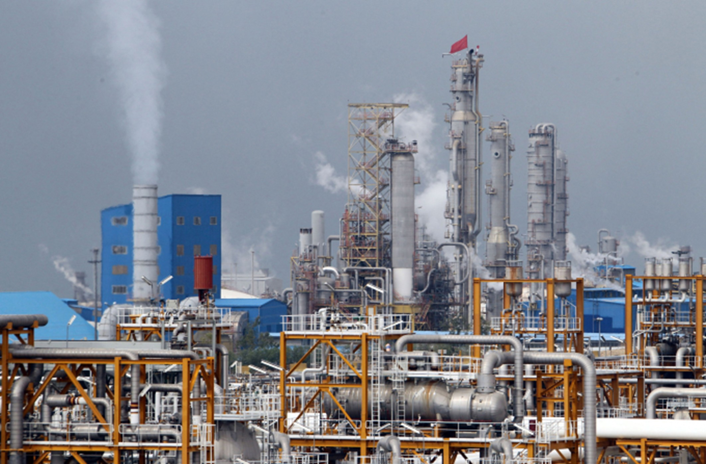

Mỹ – Iran đạt thỏa thuận về ngừng bắn, mở cửa eo biển Hormuz trong hai tuần
Mỹ và Iran đồng ý ngừng bắn trong hai tuần, Tehran sẽ cho phép tàu thuyền đi qua eo biển Hormuz trong thời gian này "với sự điều phối từ lực lượng vũ trăng".
Israel tấn công nhà máy hóa dầu lớn nhất Iran ở thành phố cảng Asaluyeh, tuyên bố giáng đòn kinh tế nặng nề lên đối thủ. "Lực lượng Phòng vệ Israel (IDF) vừa tập kích dữ dội vào cơ sở hóa dầu lớn nhất Iran ở Asaluyeh, nơi sản xuất 50% sản lượng hóa dầu của nước này", Israel Katz, Bộ trưởng Quốc phòng Israel, cho biết ngày 6/4. Theo ông Katz, Israel tuần trước còn tấn công cơ sở hóa dầu lớn thứ hai Iran. Các đòn tập kích của Israel vào hai cơ sở đã vô hiệu hóa 85% năng lực xuất khẩu của Iran trong lĩnh vực này, ông cho hay.

"Đây là đòn giáng nặng về kinh tế, tương đương hàng chục tỷ USD, vào chính quyền Iran", ông Katz nói, thêm rằng IDF nhận lệnh "tiếp tục tấn công toàn lực vào hạ tầng quốc gia đối thủ". Bộ trưởng Quốc phòng Israel cáo buộc ngành hóa dầu Iran là "động cơ chính trong cung cấp nguồn lực tài chính" cho các hoạt động của Vệ binh Cách mạng Hồi giáo Iran và quân đội nước này. Hãng tin Iran Fars News trước đó cho biết một số tiếng nổ lớn đã vang lên ở khu phức hợp Hóa dầu South Pars ở Asaluyeh, thành phố cảng tây nam nước này. Đây là nơi xử lý sản lượng khí đốt khai thác từ mỏ South Pars trên vịnh Ba Tư.
Hãng thông tấn Tasnim của Iran đưa tin các công ty cung cấp điện, nước và oxy cho Asaluyeh bị tấn công, còn công ty hóa dầu South Pars không bị hư hại. Hãng tin này cũng cho biết nguồn điện cung cấp cho toàn bộ các cơ sở hóa dầu tại Asaluyeh đã bị cắt.
South Pars là một phần của mỏ khí đốt lớn nhất thế giới nằm ngoài khơi vịnh Ba Tư mà Iran chia sẻ với Qatar. Mỏ có diện tích khoảng 9.700 km2, trữ lượng ước tính lên tới 51 nghìn tỷ m3, lớn nhất thế giới, nằm ở hai bên đường phân định trên biển giữa Iran và Qatar tại vịnh Ba Tư. Phần còn lại ở phía Qatar gọi là North Dome, có diện tích gấp đôi South Pars. Giới chức Iran cho biết South Pars có sản lượng khai thác năm 2025 là 730 triệu m3 khí đốt mỗi ngày. Hầu hết khí tự nhiên khai thác từ South Pars dùng để phục vụ Iran, đáp ứng tới 80% nhu cầu nội địa, chủ yếu để sưởi ấm và sản xuất điện.

Mỹ và Iran đồng ý ngừng bắn trong hai tuần, Tehran sẽ cho phép tàu thuyền đi qua eo biển Hormuz trong thời gian này "với sự điều phối từ lực lượng vũ trăng".

Người dân Iran tập trung trên đường phố Tehran, vậy có và hô khẩu hiệu sau khi lệnh ngừng bắn hai tuần với Mỹ được công bố.

Nằm ở bộ nam eo biển Hormuz, cách Iran gần 34 km, bán đảo Musandam của Oman đang chứng kiến những hệ lụy về kinh tế và đời sống khi xung đột bùng phát.